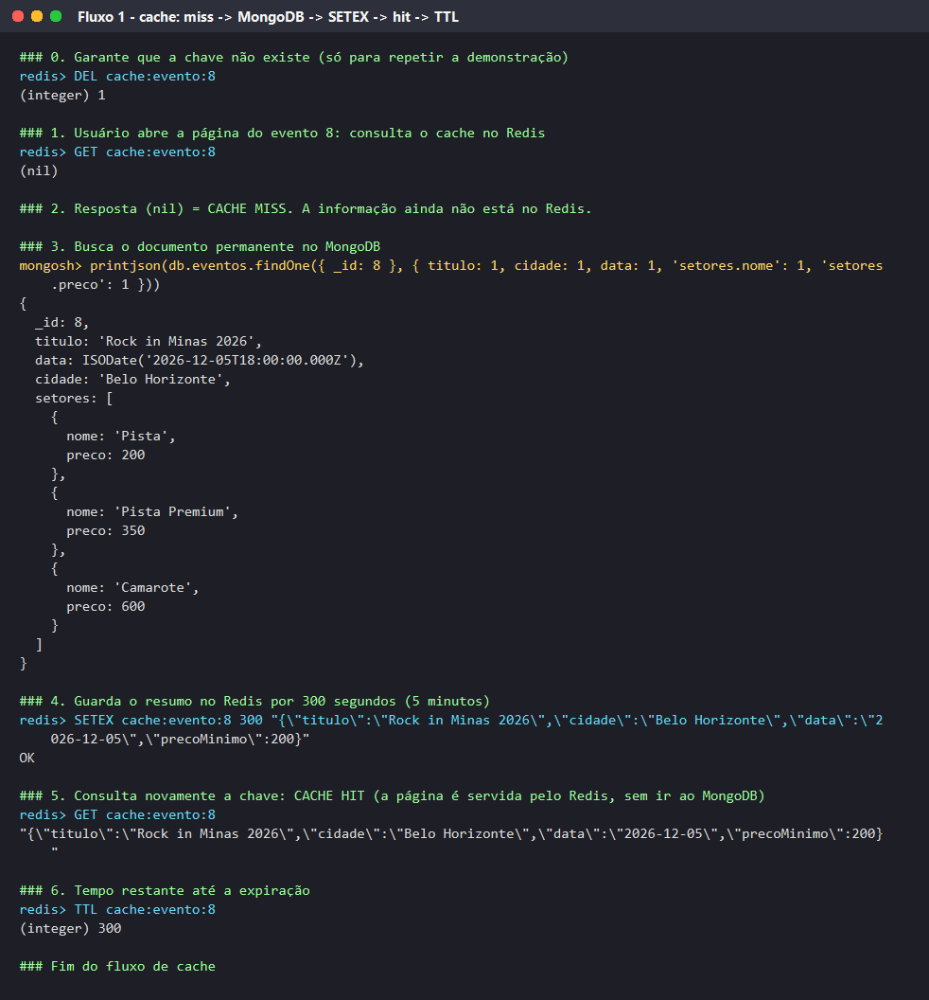
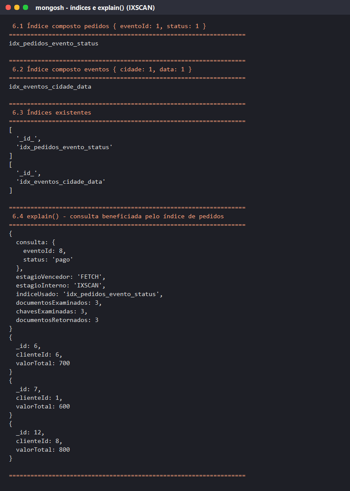

ingressos_bd2 · Apresentação em 17/08/2026
Fora do escopo: QR Code, reembolso, cupons, assentos numerados, pagamento real.
Regra do projeto: o MongoDB é a fonte da verdade; o Redis guarda o que expira, o que precisa de resposta imediata e o que pode ser reconstruído a partir do MongoDB.
| Coleção | Campos principais | Estratégia |
|---|---|---|
eventos (8) | titulo, categoria, data, cidade, local{nome, capacidade}, setores[{nome, preco, capacidade, vendidos}], tags[], status | documentos embutidos |
clientes (8) | nome, email, telefone, endereco{cidade, uf}, preferencias[], dataCadastro, ativo | documento embutido |
pedidos (12) | clienteId, eventoId, dataPedido, status, formaPagamento, itens[{setor, quantidade, valorUnitario}], valorTotal | referências + embutidos |
local, setores, endereco e itens pertencem só ao documento pai e são sempre lidos junto com ele. Evita $lookup em toda leitura. O valorUnitario do item guarda o preço histórico.
Um evento tem milhares de pedidos. Embutir o evento/cliente em cada pedido duplicaria dados e exigiria atualizar todos os pedidos a cada mudança. A junção é feita só quando necessário ($lookup).
// eventos (embutidos)
{ _id: 8,
titulo: "Rock in Minas 2026",
categoria: "Show",
data: ISODate("2026-12-05T18:00:00Z"),
cidade: "Belo Horizonte",
local: { nome: "Mineirão", capacidade: 60000 },
setores: [
{ nome: "Pista", preco: 200,
capacidade: 40000, vendidos: 18760 },
{ nome: "Pista Premium", preco: 350, ... },
{ nome: "Camarote", preco: 600, ... } ],
tags: ["musica","rock","festival"],
status: "ativo" }
// pedidos (referências + embutidos)
{ _id: 12,
clienteId: 8, // -> clientes._id
eventoId: 8, // -> eventos._id
dataPedido: ISODate("2026-07-16T13:30:00Z"),
status: "pago",
formaPagamento: "cartao",
itens: [
{ setor: "Camarote", quantidade: 1, valorUnitario: 600 },
{ setor: "Pista", quantidade: 1, valorUnitario: 200 } ],
valorTotal: 800 }
// clientes (embutido)
{ _id: 3, nome: "Carla Mendes",
endereco: { cidade: "Mariana", uf: "MG" },
preferencias: ["Humor","Show","Festa"], ativo: true }
| Necessidade | Consulta | Resultado |
|---|---|---|
| Vitrine por cidade e data | find({cidade:"Ouro Preto", status:"ativo", data:{$gte: ISODate("2026-09-01")}}) | 3 eventos |
| Ingresso até R$ 60 | find({setores:{$elemMatch:{preco:{$lte:60}}}}) | 4 eventos |
| Pedidos ≥ R$ 300 | find({status:{$in:["pago","pendente"]}, valorTotal:{$gte:300}}) | 6 pedidos |
| Campanha Show/Festa | find({ativo:true, $or:[{preferencias:"Show"},{preferencias:"Festa"}]}) | 5 clientes |
| Mais de 2 setores / busca | $expr + $size · $regex "minas" | 1 evento · 2 eventos |
insertOne cliente 9 e pedido 13 · $set pedido 7 pago · $inc em setores.$[s].vendidos com arrayFilters · updateMany + $addToSet tag "destaque"
Cliente 8: ativo:false (tem pedidos, histórico preservado) · Evento 7: visivel:false · Pedido 9 cancelado: deleteOne
db.pedidos.aggregate([
{ $match: { status: "pago" } },
{ $unwind: "$itens" },
{ $group: { _id: "$eventoId",
ingressosVendidos: { $sum: "$itens.quantidade" },
faturamento: { $sum: { $multiply:
["$itens.quantidade", "$itens.valorUnitario"] } },
qtdPedidos: { $addToSet: "$_id" } } },
{ $lookup: { from: "eventos", localField: "_id",
foreignField: "_id", as: "evento" } },
{ $unwind: "$evento" },
{ $project: { titulo: "$evento.titulo", cidade: "$evento.cidade",
ingressosVendidos: 1, faturamento: 1,
qtdPedidos: { $size: "$qtdPedidos" } } },
{ $sort: { faturamento: -1 } }
])
| Evento | Ingr. | R$ |
|---|---|---|
| Rock in Minas 2026 | 7 | 2.100 |
| Atlético x Cruzeiro | 6 | 720 |
| Festival Som da Serra | 4 | 480 |
| Orquestra Sinfônica | 2 | 300 |
| Comédia das Minas | 4 | 200 |
Outras agregações: top 5 clientes por gasto (com $lookup e filtro de ativos) e ocupação % por evento a partir dos setores embutidos ($round).
db.pedidos.createIndex(
{ eventoId: 1, status: 1 },
{ name: "idx_pedidos_evento_status" })
// consulta do painel do organizador
db.pedidos.find({ eventoId: 8, status: "pago" })
// também usado no $match da agregação
db.eventos.createIndex({ cidade: 1, data: 1 }) // vitrine
estagioVencedor: 'FETCH' estagioInterno: 'IXSCAN' indiceUsado: 'idx_pedidos_evento_status' chavesExaminadas: 3 documentosExaminados: 3 documentosRetornados: 3
Sem o índice: COLLSCAN, lendo todos os pedidos para retornar 3. Com o índice, o MongoDB examina exatamente as chaves necessárias.
Padrão: <tipo>:<entidade>:<id>[:<detalhe>]
| Chave | Estrutura | Uso no cenário |
|---|---|---|
sessao:cliente:3 | string + TTL 1800 | sessão de login expira em 30 min |
reserva:evento:1:cliente:3 | string + TTL 600 | ingressos segurados por 10 min no checkout |
cache:evento:8 | string + TTL 300 | cache da página do evento |
resumo:evento:1 · resumo:cliente:3 | hash | resumo rápido (HGETALL / HINCRBY) |
ranking:eventos:vendas · :acessos | sorted set | mais vendidos / mais acessados (ZREVRANGE, ZINCRBY) |
fila:pedidos:pagamento · historico:cliente:3 | list | fila FIFO (LPUSH/RPOP) · últimos 5 visitados (LTRIM) |
online:clientes · favoritos:cliente:3 | set | conectados agora (SCARD, SISMEMBER) · favoritos |
contador:acessos:evento:8 | string (INCR) | visualizações da página |
# string com TTL SETEX sessao:cliente:3 1800 "ativa" OK TTL sessao:cliente:3 (integer) 1800 SETEX reserva:evento:1:cliente:3 600 "Pista|2" # hash HSET resumo:evento:1 titulo "Festival Som da Serra" cidade "Ouro Preto" ingressosVendidos 977 HINCRBY resumo:evento:1 ingressosVendidos 2 979 HGETALL resumo:evento:1 # set SADD online:clientes "cliente:1" "cliente:3" "cliente:6" SCARD online:clientes (integer) 3 SISMEMBER online:clientes "cliente:3" (integer) 1
# sorted set ZADD ranking:eventos:vendas 35370 "evento:5" 29260 "evento:8" 977 "evento:1" ... ZREVRANGE ranking:eventos:vendas 0 2 WITHSCORES 1) "evento:5" 2) "35370" 3) "evento:8" 4) "29260" 5) "evento:1" 6) "977" ZINCRBY ranking:eventos:vendas 2 "evento:1" "979" # list (fila FIFO) LPUSH fila:pedidos:pagamento "pedido:7" LPUSH fila:pedidos:pagamento "pedido:13" LRANGE fila:pedidos:pagamento 0 -1 1) "pedido:13" 2) "pedido:7" RPOP fila:pedidos:pagamento "pedido:7"
db.eventos.findOne({_id:8})redis> GET cache:evento:8 (nil) # cache miss mongosh> db.eventos.findOne({ _id: 8 }, { titulo: 1, cidade: 1, data: 1, "setores.preco": 1 }) { _id: 8, titulo: 'Rock in Minas 2026', cidade: 'Belo Horizonte', ... } redis> SETEX cache:evento:8 300 "{\"titulo\":\"Rock in Minas 2026\",\"cidade\":\"Belo Horizonte\",\"precoMinimo\":200}" OK redis> GET cache:evento:8 "{\"titulo\":\"Rock in Minas 2026\",\"cidade\":\"Belo Horizonte\",...}" # cache hit redis> TTL cache:evento:8 (integer) 300
MongoDB = fonte da verdade · Redis = resumo temporário para leituras repetidas. Quando o TTL chega a zero, o próximo acesso é um novo miss.
SETEX reserva:evento:1:cliente:3 600 "Pista|2"insertOne({_id:14, status:"pendente", ...})LPUSH fila:pedidos:pagamento "pedido:14"RPOP pelo processadorupdateOne status:"pago"$inc vendidos +2ZINCRBY ranking 2 · HINCRBY resumo 2DEL reserva · DEL cache:evento:1Pedido 14, status do pagamento, quantidade vendida do setor Pista (834 → 836).
Reserva com prazo (expira se não pagar), fila de processamento, ranking 977 → 979, resumo em memória e invalidação do cache porque o dado mudou.


MongoDB e Redis são complementares: o MongoDB guarda e consulta os dados permanentes com flexibilidade; o Redis entrega expiração automática, rankings sempre ordenados, filas e conjuntos em memória. Juntos, cobrem tanto o histórico quanto a experiência de compra em tempo real.